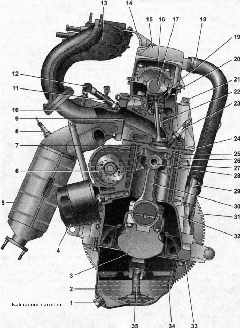

Двигатель 1,6 лДвигатель — рабочим объемом 1,6 л, восьмиклапанный, создан на базе двигателя ВАЗ-2111. Он имеет увеличенный по высоте на 2,3 мм блок цилиндров и оригинальный коленчатый вал. Диаметр цилиндров оставлен прежний — 82 мм, ход поршня увеличен до 75,6 мм в отличие от 71 мм у базового двигателя. В опорах коренных подшипников установлены масляные форсунки. 
Поперечный разрез двигателя 1,6i: 1 — пробка сливного отверстия поддона картера; 2 - поддон картера двигателя 3 коленчатый вал; 4 масляный фильтр; 5 — каталитический коллектор; 6 — насос охлаждающей жидкости; 7 — поршень; 8 — датчик концентрации кислорода; 9 — прокладка впускного трубопровода и выпускного коллектора; 10 — впускной трубопровод; 11 — форсунка; 12 — диагностический штуцер топливной рампы; 13 ресивер; 14 — кронштейн крепления наконечника оболочки троса; 15 - крышка головки блока цилиндров; 16 - корпус подшипников распределительных валов; 17 — распределительный вал; 18 — шланг системы вентиляции картера; 19 — толкатель клапана; 20 — головка блока цилиндров; 21 болт крепления головки к блоку цилиндров; 22 — клапан; 23 — свеча; 24 — прокладка головки блока цилиндров; 25 — верхнее компрессионное кольцо; 26 — нижнее компрессионное кольцо; 27 — маслосъемное кольцо; 28 — поршневой палец; 29 — штуцер для установки указателя уровня масла; 30 — шатун; 31 маховик; 32 блок цилиндров; 33 прокладка поддона картера; 34 — указатель уровня масла; 35 — маслозаборник В головке блока цилиндров находятся один распределительный вал, восемь клапанов и восемь толкателей клапанов с регулировочными шайбами. Опоры распределительного вала выполнены в головке. К верхней плоскости головки болтами крепятся два корпуса подшипников распределительного вала. Сверху газораспределительный механизм закрыт крышкой с маслозаливной горловиной. В заглушке головки блока цилиндров установлен датчик положения распределительного вала, а на заднем конце вала установлен штифт, предназначенный для определения датчиком положения вала. Привод распределительного вала и насоса охлаждающей жидкости осуществляется зубчатым ремнем от зубчатого шкива, установленного на коленчатом вале двигателя. Натяжение ремня и направление его движения по шкивам осуществляется натяжным роликом. |